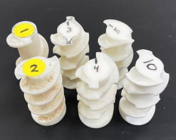
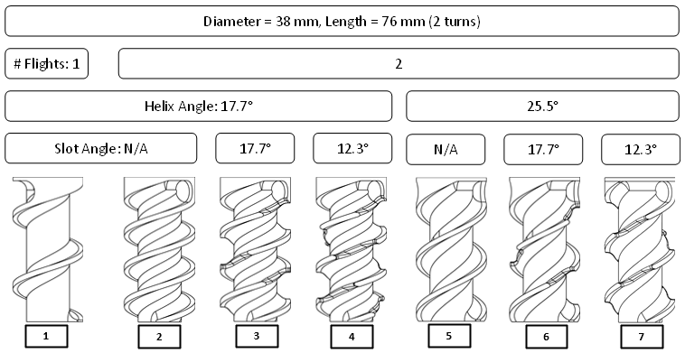
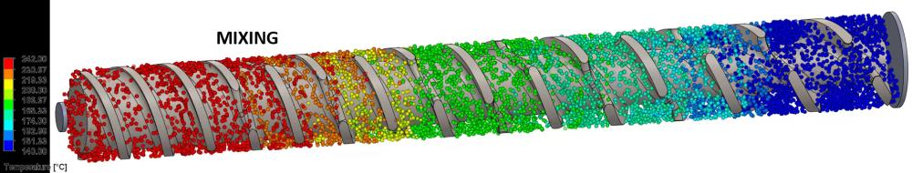

Compact mixing screw design and validation
Kazmer & Kodra, Polymers 2025. doi:10.3390/polym17020215
Seven SLS-printed screw sections varied flight count, helix angle and mixing-slot geometry. Non-isothermal CFD in SolidWorks Flow Simulation narrowed the field to a double-flighted 20° helix with counter-rotating mixing slots, which was then machined in 316 stainless and instrumented for output and energy use.
- Length to diameter
- 8:1
- Output, recycled PP
- 0.74 kg/hr at 40 RPM
- Specific energy
- 0.264 kWh/kg HIPS, 0.344 kWh/kg rPP
- Regression fit
- Mass output R² = 0.977, SEC R² = 0.950
- CFD vs. measured
- Temperature within ~10 °C


